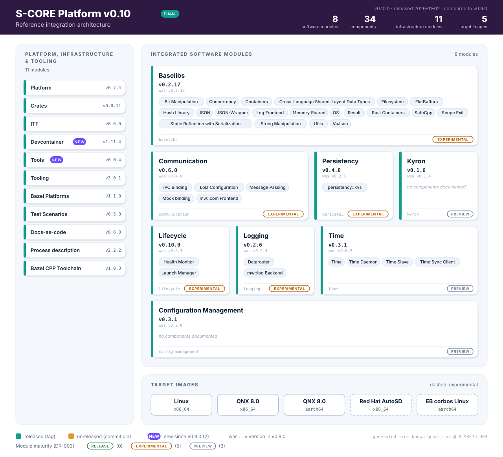

S-CORE Platform v0.10 release note#
Note
FINAL. This is the release note of release v0.10.0 (2026-11-02).
S-CORE v0.10 release note
|
status: valid
security: YES
safety: QM
|
||||
📋 Overview#
This document provides an overview of the changes, improvements, and bug fixes included in the software platform release version v0.10.0 as compared to the previous platform release (v0.9.0).


Fig. 8 Modules, components and images of the reference integration v0.10.0.#
The maturity classification of the software modules (Release, Experimental, Preview) is explained in DR-003-Strat: Module Maturity Classification.
📜 Disclaimer#
This release note does not “release for production”, as it does not come with a safety argumentation and a performed safety assessment. The work products compiled in the safety package are created with care according to a process satisfying standards, but the project, being a non-profit and open source organization, can not take over any liability for its content.
🔄 Changes to the Platform#
✨ New Features#
New infrastructure module: Tools#
score_tools (eclipse-score/tools)
is part of known_good.json. Persistency’s test BUILD files load
@score_tools//score_pytest, which moved there from Docs-as-code, so
reference_integration needs it as a regular dependency
(#388).
New infrastructure module: Devcontainer#
score_devcontainer (eclipse-score/devcontainer)
is pinned in known_good.json at 1.11.4; scripts/module_tests.py
raises the modules’ own score_devcontainer dependency to this version
(#438).
Bazel 8.8.2#
reference_integration builds with Bazel 8.8.2 instead of 8.6.0
(.bazelversion)
(#436).
Integration Strategy (DR-008) test workflow#
Each target software module runs its own test suite in its own workspace,
against the dependency versions of reference_integration, instead of
inside the workspace of reference_integration. This implements the parts
of DR-008 that the v0.9 release note left for a follow-up release
(#398):
scripts/module_tests.py run <module>fetches the module at itsknown_good.jsonpin with the integration patches, pins its direct dependencies to the versions ofreference_integration(--override_module) and runsbazel coveragewithbazel_common/unified.bazelrcandbazel_common/unified_toolchains.MODULE.bazel.The
module_tests.ymlworkflow runs one job per module and feeds the results into the unit test summary and the documentation.Module-specific test exclusions are documented in
metadata.test_notesofknown_good.json.With the secret
UBUNTU_SNAPSHOT_MIRROR_URLthe module test jobs download Ubuntu snapshot packages from a mirror first (#429).
Software Bill of Materials (SBOM)#
reference_integration generates an SBOM with
score_sbom 0.1.1 and uploads it
as a CI build artifact
(#304,
#339,
#353).
Reference images#
The QNX images use
score_rules_imagefs0.1.0; host files are placed withrules_pkgpkg_filestargets (#349).The QNX and Linux image definitions share the packages
//images/common/apps,//images/qnx_common/buildand//images/qnx_common/configs(#389).The AutoSD image uses a newer AutoSD OCI base image and is pushed on release (#404, #424).
Platform integration tests#
The new //platform_integration_tests:pit suite runs the //showcases
applications for Communication, Kyron, Lifecycle, Logging and Time on the target
image (Docker on Linux x86_64, QEMU on QNX x86_64). Each test links the platform
stakeholder requirement it demonstrates; the platform verification report shows
them in the chapter “Stakeholder Requirements”
(#377).
Requirement coverage from module tests#
reference_integration executes the Lifecycle integration tests, the Logging
component tests and the Persistency component integration tests, so their
PartiallyVerifies/FullyVerifies links appear in the verification reports
(#385,
#387).
Qualified coverage tool in the modules#
Baselibs, Kyron, Persistency and Time measure coverage with the qualified
score_coverage module
(eclipse-score/coverage_tool)
instead of the coverage pipeline of score_tooling. One
bazel coverage --config=llvm_cov run reports line and branch coverage for
C++ and Rust, lists untested files with 0 % and supports coverage
justifications
(baselibs#584,
kyron#175,
persistency#450,
time#235).
Baselibs#
Serialization: Added a public serialization library with a strategy-based API for serialization and deserialization.
Concurrency: Added composable operations on locked values through
LockedPtr::transform(),and_then(), andor_else(), plus a Rust wrapper for C++ stop tokens.Containers: Extended
NonRelocatableVectorwith element removal, clearing, and emptiness checks.FutureCPP Improved FutureCPP support for input iterators and interoperability with
std::optional.OS abstraction layer: Added a mockable Linux syslog wrapper, environment-variable operations, and public access to the network name-resolution Bazel target.
JSON: Added explicit control over compact and pretty-printed output.
FlatBuffers: JSON-schema generation now preserves rich attributes from schema comments and produces deterministic attribute ordering.
Lifecycle: control interface for State Managers#
Lifecycle provides the ILmControl API, with which State Managers
communicate with the Launch Manager over mw::com
(Lifecycle v0.8.0 release notes).
Logging: Linux syslog backend#
mw::log has a Linux syslog(3) backend for LogMode::kSystem, based on
the new score::os::Syslog wrapper of Baselibs
(logging#271,
baselibs#502).
ITF: QEMU plugin for Linux images#
The QEMU plugin of ITF v0.6.0 boots Linux images in addition to QNX images
(EB corbos Linux for aarch64 and Ubuntu, with image definitions from
os_images), accepts an additional disk image with the test binaries and
their data, and has a hook for extra QEMU arguments
(itf#122,
itf#123,
itf#135,
itf#139).
Module maturity classification (DR-003)#
The architecture diagram shows the maturity of each software module (Release, Experimental, Preview) as defined in DR-003-Strat. A module without module verification report and without dependable element documentation is Preview; a module whose component requirements are all fully verified and inspected is Release; all other modules are Experimental. This follows up on the maturity levels announced in the v0.8 release note (842d366).
Documentation and reports#
The documentation bundles are generated from
known_good.json(bazel_common/docs_bundles.bzl); the Time documentation is included (#337, #348).The module verification reports (Baselibs, Lifecycle, Logging, Persistency) are linked from a common index; the unit test and coverage summaries are part of the Platform Verification Report; the status dashboard uses branch-aware links (#342, #358, #373).
The Platform Verification Report uses the
platform_verification_reporttemplate of Docs-as-code (Docs-as-code v8.2.0 release notes).The module tests export the coverage reports of Baselibs, Persistency, Logging, Kyron, Lifecycle and Time and combine them into one LCOV file (
coverage-report/coverage_report.dat) that the documentation build reads; Communication and Configuration Management run their tests without coverage (#425).The documentation of the Communication dependable elements is published via the module test artifacts and linked from the module documentation index (
metadata.dependable_element_docsinknown_good.json) (bbf95e3, d612b38).The Overall Status page was replaced by the Release-wide Progress Overview next to the release notes, with release-over-release charts per module (#392).
The release note is generated with
scripts/release_note/generate_release_note.py; its module tables link every module release since the origin release (#414, cf0f846).
CI#
💥 Breaking Changes#
reference_integration: resolved-dependency overrides removed#
The module test mechanism of v0.9 was removed with its files
scripts/known_good/resolved_dependencies.py,
scripts/known_good/module_patches.py and the rust_coverage package
(#398).
Action required: run module tests with scripts/module_tests.py and the
configuration in bazel_common/unified.bazelrc.
reference_integration: QNX image packages moved#
The common QNX build fragments and configuration files moved to
//images/qnx_common/build and //images/qnx_common/configs; the package
images/qnx_aarch64/configs was removed and images/qnx_x86_64/configs
keeps only the x86-specific files
(#389).
Action required: update references to the old image paths in derived images.
Platform: stakeholder requirement IDs renamed#
Platform v0.7.3 gives the safety stakeholder requirements named IDs
instead of numbers, for example stkh_req__dependability__safety_features_1
became stkh_req__dependability__health_management. Tests that still link an
old ID make the documentation build fail with an unknown-link warning
(score#3286).
Note
Important for integrators: the Lifecycle platform integration test of
reference_integration links the renamed requirement
(5d09c1b).
Action required: link tests to the new stakeholder requirement IDs.
Baselibs#
Removed compatibility targets and headers: Replace deprecated
//srcBazel aliases and the string and atomic shims under//score/memorywith their replacement targets, headers, and namespaces.Removed deprecated libraries:
score/datetime_converterand thescore/oswrapperscpuid,file_stream, andmake_devare no longer available.JSON backend consolidation: vaJson is now the sole parser and writer backend. Remove the deleted
writer_libraryflag and the deprecated, now ineffectivebase_libraryflag. Serialized output may change: booleans usetrue/falseinstead of1/0, escaping is corrected, and empty objects and arrays are emitted as{}and[]. Default output remains pretty-printed.Removed deprecated aliases and macros: Replace
BlankandResultBlankwithvoidandResult<void>. Use theSCORE_-prefixed versions of the removed reflection and serialization macros.OS abstraction layer API cleanup: Replace the deprecated Linux thread-affinity wrapper and QNX channel-creation and timer-timeout overloads with their supported alternatives.
FlatBuffers allocator compatibility: The affected
LoadBufferoverload now requiresscore::cpp::pmr::vector<uint8_t>rather thanstd::pmr::vector<uint8_t>.Deprecation:
Synchronized::WithLockremains available but is deprecated in favor oflock()and composableLockedPtroperations.
Communication: removed deprecated API and exception specifications#
Communication v0.5.0 and v0.6.0 change public mw::com APIs that
applications use directly
(Communication v0.5.0 release notes,
Communication v0.6.0 release notes):
GenericProxyEvent::GetSampleSize(), deprecated inv0.5.0, was removed inv0.6.0; useGetDataTypeSizeInfo().Size()(communication#997).Functions that can propagate exceptions are no longer
noexcept:GenericProxyEvent::SetReceiveHandler,UnsetReceiveHandlerandUnsubscribe(v0.5.0),GenericSkeleton::StopOfferService(),GenericSkeletonEvent::Send()andGenericSkeletonEvent::Notify()(v0.6.0) (communication#1202, communication#1232).tracing::TypeErasedSamplePtrwas replaced byimpl::SamplePtr<void>(v0.5.0) (communication#1229).The aggregate Bazel target
//score/memory/shared:typeswas removed (v0.6.0) (communication#1487).
Action required: replace GetSampleSize() and TypeErasedSamplePtr, do
not rely on noexcept of the listed functions and depend on the specific
//score/memory/shared sub-targets (for example :offset_ptr,
:vector, :string).
Persistency: KVS API and file format#
Persistency v0.4.0 changes the public KVS API that applications use
directly
(Persistency v0.4.0 release notes):
Kvs::reset_keywas renamed toSetValueToDefault(C++) andset_value_to_default(Rust), without a deprecated alias (persistency#585).The KVS rejects untagged JSON; a defaults file must use the type-tagged top-level envelope
{"t":"obj","v":{...}}(persistency#490).The C++ headers are
score/kvs/kvs.h,kvs_builder.handkvs_value.hin@score_persistency//score/kvsand are included with the full path; theKvsBuilderflags became enums (Defaults,KvsLoad,WorkingDir) (persistency#461, persistency#562).Deprecated, still available: the namespace
score::mw::per::kvs(nowscore::kvs), the old*.hppheaders, the snake_case method names (now PascalCase) and constants and enumerators withoutkprefix (persistency#562, persistency#564, persistency#614).Keys must be non-empty, consist of printable ASCII characters and be at most 32 bytes long; the C++ and Rust KVS return
InvalidKeyfor other keys, and loading a file with such a key fails (persistency#308, persistency#508, persistency#509).The KVS stores its files atomically with the permissions
640(persistency#503).
Note
Important for integrators: reference_integration adapts Configuration
Management v0.3.1 to the new headers and builder API by the patch
patches/config_management/002-migrate-to-persistency-kvs-api.patch
(3467044).
The feature integration tests use SetValueToDefault and
set_value_to_default and write the defaults files with the tagged
envelope
(873238a,
0e4c5be,
c37c448).
Action required: rename reset_key calls, convert defaults files to the
tagged envelope, update the KVS includes, builder calls and names, keep keys
within the allowed characters and length, and check that processes reading KVS
files of another user still have access.
Lifecycle: Launch Manager configuration and control API#
Lifecycle v0.7.0 to v0.10.0 change the Launch Manager configuration
and its control interface. Configurations with old keys fail the schema
validation:
v0.7.0: all durations are configured in milliseconds, and the keys get the suffix_ms, for exampletransition_timeout_msandreporting_cycle_ms(lifecycle#637).v0.8.0:ILmControlreplacesControlClient. The top-levelfallback_run_targetis mandatory,number_of_attemptsis limited to255, andapplication_type: Reportingonly allows the ready conditionRunning(Lifecycle v0.8.0 release notes).v0.9.0:deployment_config.ready_recovery_actionis deprecated and will be removed with the next release (Lifecycle v0.9.0 release notes).v0.10.0: the configurationschema_versionis2; POSIX RLIMITs replace the optionsmax_memory_usageandmax_cpu_usage(lifecycle#868, Lifecycle v0.10.0 release notes).
Note
Important for integrators: the Launch Manager configuration of the
simple_lifecycle showcase in reference_integration uses the new
schema and can serve as an example
(a575ce6,
9c0136e).
Action required: rename the duration fields to *_ms and convert the values
to milliseconds, migrate State Managers from ControlClient to
ILmControl, set schema_version to 2, replace
ready_recovery_action.restart with activation_retry_attempts and
delay_before_restart_ms, and replace max_memory_usage with
RLIMIT_AS, RLIMIT_STACK or RLIMIT_DATA and max_cpu_usage with
RLIMIT_CPU.
Tooling: safety analysis and dependable element rules#
Tooling v2.3.1 and v3.0.0 change the Bazel rules that modules use for
their safety documentation: fmea became safety_analysis, which
v3.0.0 splits into failure_modes, fault_trees and
safety_analysis; dependable_element no longer has the attribute
assumptions_of_use; PlantUML elements are identified by their written name
instead of the alias; the crate repository is renamed from @crates to
@crates_score_tooling
(Tooling v2.3.1 release notes,
Tooling v3.0.0 release notes).
Note
Important for integrators: Logging v0.2.6 and Configuration Management
v0.3.1 still set assumptions_of_use; reference_integration
removes the attribute by patch
(004-drop-dependable-element-aou-attr.patch and
003-drop-dependable-element-aou-attr.patch)
(dc41763).
Action required: migrate dependable_element and safety analysis targets
with the migration checklist of the Tooling v3.0.0 release notes.
Test Scenarios: libraries moved under score/#
Test Scenarios v0.5.0 moved the libraries to
@score_test_scenarios//score/test_scenarios_cpp and
@score_test_scenarios//score/test_scenarios_rust
(testing_tools#31).
Note
Important for integrators: the feature integration tests of
reference_integration use the new labels
(cb89c10).
Action required: update the @score_test_scenarios labels.
Docs-as-code: score_pytest moved, FMEA attribute renamed#
Docs-as-code v8.4.0 removed the score_pytest macro and the test
attributes plugin; they are provided by score_tools. The attribute
root_cause of feat_fmea and comp_fmea was renamed to
failure_root_cause
(Docs-as-code v8.4.0 release notes).
Action required: load score_pytest from @score_tools and rename
root_cause in FMEA needs.
🎯 Reference Integration scope#
Version:
v0.10.0Source / tag: Reference integration
Release notes: Reference integration release notes
Platform Verification Report: Platform Verification Report (doc__platform_verification_report_latest)
The Release notes column of the module tables links every release of a module since v0.9.0, oldest first; modules unchanged since v0.9.0 show their current release.
🧩 Integrated Software Modules#
Name |
Version |
Release notes |
Module verification report |
|---|---|---|---|
|
— |
||
|
|||
|
Dependable elements: |
||
|
|||
|
— |
||
|
|||
|
|||
|
— |
||
|
— |
🔧 Associated Infrastructure Modules#
💿 Images#
Name |
Download |
How-to |
Description |
|---|---|---|---|
Reference Linux x86_64 image |
— |
Linux x86_64 Docker image bundling the S-CORE showcases. |
|
Reference QNX x86_64 image |
— |
QNX x86_64 image, run in QEMU. |
|
Reference QNX aarch64 image |
— |
QNX 8.0 aarch64 image, run in QEMU or on Raspberry Pi 4/5. |
|
Reference Red Hat AutoSD Linux image (Experimental) |
Red Hat AutoSD x86_64 QEMU image (qcow2) with the S-CORE showcases. |
||
Reference Elektrobit corbos Linux for Safety Applications image (Experimental) |
— |
Elektrobit corbos Linux for Safety Applications (aarch64) image. |
🐞 Known Issues/Vulnerabilities and Bug Fixes#
See the release notes of the individual modules.
Safety Package(s) not completed for modules and platform. To qualify the S-CORE platform these gaps must be filled.
🚀 Upgrade Instructions#
Increase to the newest Bazel registry versions: https://eclipse-score.github.io/bazel_registry_ui
The module versions of this release are listed in known_good.json.
📧 Contact Information#
For any questions or support, please contact the Project leads or raise an issue/discussion. https://projects.eclipse.org/projects/automotive.score